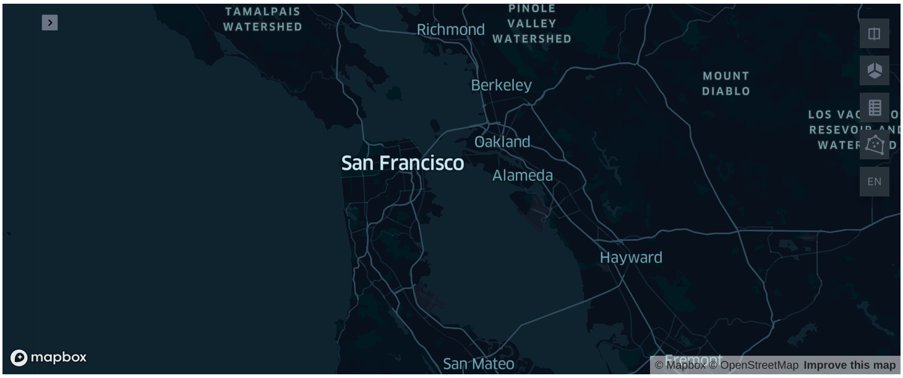
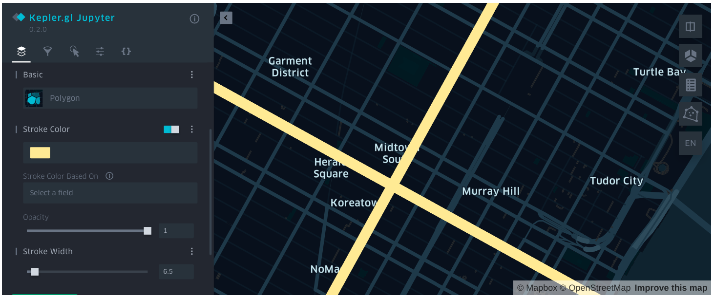

使用 Kepler.gl 展示时空信息¶
Kepler.gl 是一款功能强大的开源地理空间数据可视化工具。你只需在 Jupyter Notebook 中导入 Kepler.gl，就可以获得生动且直观的时空数据渲染效果。本文介绍如何使用 Kepler.gl 展示 Arctern 输出的时空信息。
安装 Jupyter Notebook 和 Kepler.gl¶
在后续步骤中，你需要使用 Jupyter Notebook 运行代码，以及使用 Kepler.gl 进行空间数据可视化。如果你的计算机未安装 Jupyter 和 Kepler.gl，请执行以下命令安装这两个工具：
# 进入 Conda 环境
$ conda activate arctern_env
# 安装 Jupyter 和 Kepler.gl
$ conda install -c conda-forge jupyterlab
$ pip install keplergl
加载 Kepler.gl 地图¶
使用 KeplerGl 创建一个地图对象 map_1：
>>> # 加载一个空地图
>>> from keplergl import KeplerGl
>>> map_1 = KeplerGl()
>>> map_1

添加数据¶
创建两个 LINESTRING 对象以表示两条道路，并将这两条道路的地理信息保存到 df 中。然后使用 add_data 将 df 作为输入数据加载到地图上。
>>> import pandas as pd
>>> df = pd.DataFrame({'geos': ['LINESTRING (-73.996324 40.753388, -73.972088 40.743215)', 'LINESTRING (-73.989555 40.741531, -73.973952 40.762962)']})
>>> map_1.add_data(data=df, name='data_1')
>>> map_1

参考¶
更多示例及接口说明请参考 Kepler.gl 官网关于 Jupyter Notebook 的使用介绍。